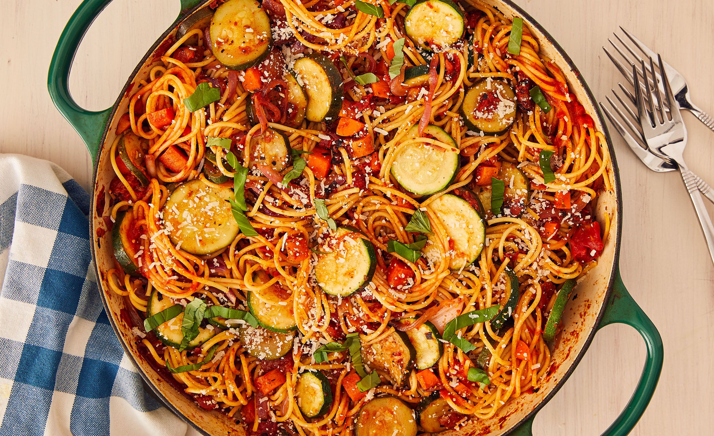

Croatian Pasta

Description
A friend and I basically lived on this dish while we spent a week in Dubrovnik, Croatia. It was the only thing we could reasonably
cook in the Airbnb we'd rented, which just had a mini-fridge and a one-burner stove. I guess that's a hotplate? Anyway, we'd buy spaghetti,
onion, zucchini, tomatoes, and any other vegetable that caught our eye, as well as a jar of pre-made pasta sauce. You basically cook all the veggies
add the sauce and let that simmer to mix in the flavors, then cook the pasta and mix it all together. Red wine is a great addition, both to the sauce
and the meal as a whole.
Ingredients
This is by no means an exhaustive list of ingredients. This dish is an experiment if resourcefulness, so if you don't have everything listed here,
or want to add things that aren't on the list, feel free. Consider these more like guidelines than hard and fast instructions
- Pasta noodles - any kind that catches your fancy
- Pre-made pasta sauce
- 1 white or yellow onion
- 1 bell pepper
- 1 zucchini
- 1 package of mushrooms
- A few cloves of garlic (I go heavy with this, use your own discretion)
- Salt
- Pepper
- Red wine
- Olive oil
Equipment
- Cutting Board
- Knife
- Bottle opener
- Saute Pan (Cast iron if you can)
- Sauce pan
- Pot
- Strainer
Directions
- If you're using mushrooms consider boiling them first. It adds a nice crisp in the saute-ing and keeps them juicy.
Don't worry about how long to boil them, you can't overdo it. Just throw them in a pot of water, set it to boil and let it go
while you prep all your other vegetables. You don't have to do this but it's my preferred method of preparation.
- Cut up all vegetables to the desired size. I find with spaghetti noodles, bigger pieces are better.
However, if you're using something smaller like penne, fusilli or orzo, cut them up small
- Set stove to medium high heat and add olive oil to saute pan.
- Don't add veggies all at once, there's an order here. Tougher, more fibrous pieces like onions and bell peppers first. Give mushrooms a little less time
and give watery pieces like zucchini the least
- Salt and pepper veggies to taste, then add diced garlic
- let simmer for a few minutes, reduce heat to low
- Once the pan has cooled somewhat add pre-made sauce to pan and stir in veggies
- after testing flavor liberally, add a healthy dose of red wine and stir in
- stir sauce regularly throughout the rest of the preparation
- pour water into pot, add a hefty pinch of salt and set to boil
- once water is boiling, add pasta
- when you feel noodles are complete, pour through strainer
- plate, add sauce, enjoy